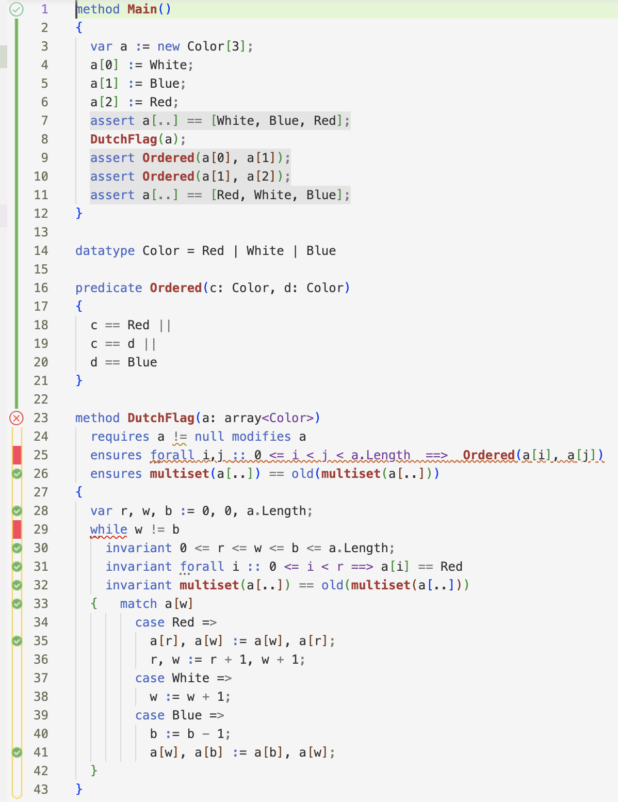

Development version
|
Dafny is a verification-aware programming language that has native support for recording specifications and is equipped with a static program verifier. By blending sophisticated automated reasoning with familiar programming idioms and tools, Dafny empowers developers to write provably correct code (w.r.t. specifications). It also compiles Dafny code to familiar development environments such as C#, Java, JavaScript and Go (with more in progress, such as Python) so Dafny can integrate with your existing workflow. Dafny makes rigorous verification an integral part of development, thus reducing costly late-stage bugs that may be missed by testing. |
Quick Links: |
|
In addition to a verification engine to check implementation against specifications, the Dafny ecosystem includes several compilers, plugins for common software development IDEs, a LSP-based Language Server, a code formatter, a reference manual, tutorials, power user tips, books, the experiences of professors teaching Dafny, and the accumulating expertise of industrial projects using Dafny. Example Dafny code in a Visual Studio IDE is shown to the right. Dafny has support for common programming concepts such as
Dafny also offers an extensive toolbox for mathematical proofs about software, including
|
 |